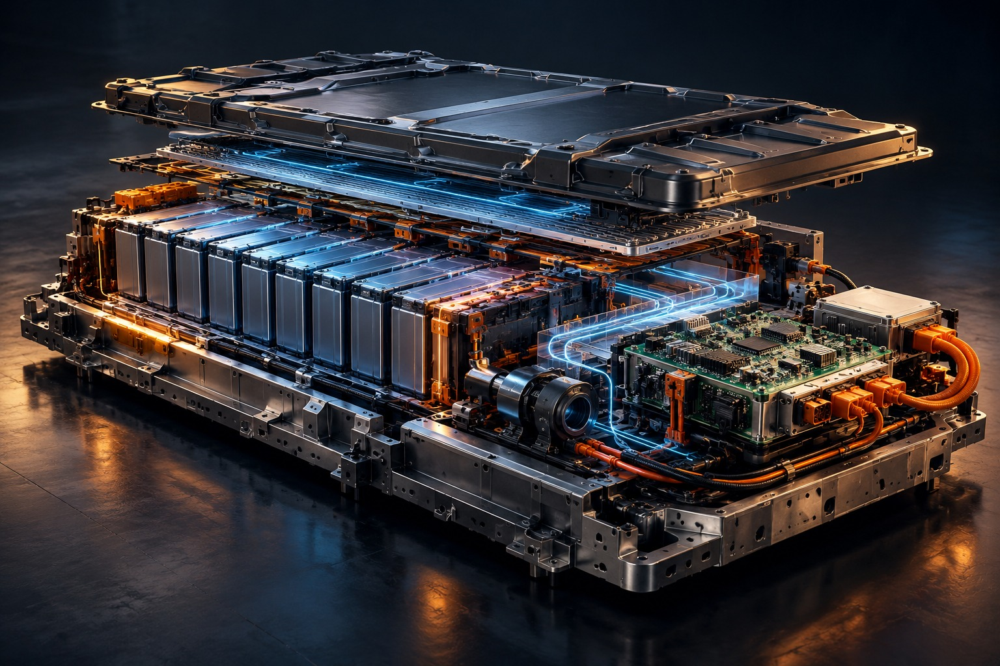
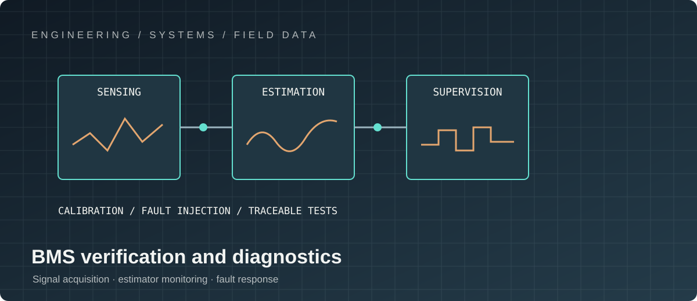

PROJECT 03 / ELECTRIFICATION
Electric Vehicle Battery Management
Battery state estimation and embedded software, connecting cell behaviour to vehicle-level decisions.

My contribution: battery algorithms and embedded architecture
I work across the boundary between battery behaviour and production firmware: translating cell and pack measurements into state estimates, diagnostics and actionable operating limits. My contribution is to make algorithm behaviour understandable at system level while accounting for sensor quality, cell variation, temperature, ageing, calibration and the interfaces consumed by vehicle supervisory functions.

My role: make the algorithm work on the target
I connect model development and parameter identification with the constraints of an embedded implementation: fixed-rate execution, numerical conditioning, CPU and memory budgets, calibration configuration, diagnostic coverage and target-level testability. I treat estimator performance as a system property—not just an offline fit—by examining how errors propagate into power limits, fault decisions and vehicle behaviour.
My technical focus is to preserve a traceable line from measured cell behaviour, through model and estimator assumptions, to bounded outputs that other vehicle functions can safely consume.
TECHNICAL LEADERSHIP / ELECTRIFIED VEHICLES
From cell behaviour to vehicle-level decisions
A production BMS is a safety-relevant estimation and control subsystem. It must convert noisy measurements and uncertain models into bounded, explainable limits while remaining deterministic on embedded targets and interoperable with vehicle supervisory systems.
Core expertise
- System and software architecture: component boundaries, data ownership, interface contracts and timing budgets.
- Model-based estimation using equivalent-circuit models, parameter maps and EKF-style state observers.
- SoC, SoH, SoP and range-related estimation, with explicit treatment of uncertainty, temperature and ageing.
- Cell and pack diagnostics: sensor plausibility, imbalance, isolation-related signals, thermal excursions and fault escalation.
- Charge/discharge limits, derating logic and coordination with vehicle torque, charging and thermal-management requests.
- Embedded implementation constraints: fixed-rate execution, CPU and memory budgets, numerical stability and calibration configuration.
- Verification through recorded drive cycles, replayable datasets, unit tests, HIL and vehicle-level integration.
- Field-data feedback loops to improve model fidelity, diagnostic thresholds and calibration quality.
My technical leadership and cross-functional contribution
I bring algorithm, firmware, electronics, systems, calibration, functional-safety and vehicle-test stakeholders around explicit behavioural contracts: signal ownership, units and validity, update rates, fault semantics, calibration responsibility and expected response to degraded inputs. I use architecture reviews to surface assumptions early and to keep component design aligned with the vehicle-level safety concept.
My contribution also includes prioritising integration risks, driving root-cause analysis across software/hardware boundaries, defining risk-based verification, and ensuring changes are evaluated against timing, diagnostic coverage and production maintainability—not only nominal algorithm accuracy.